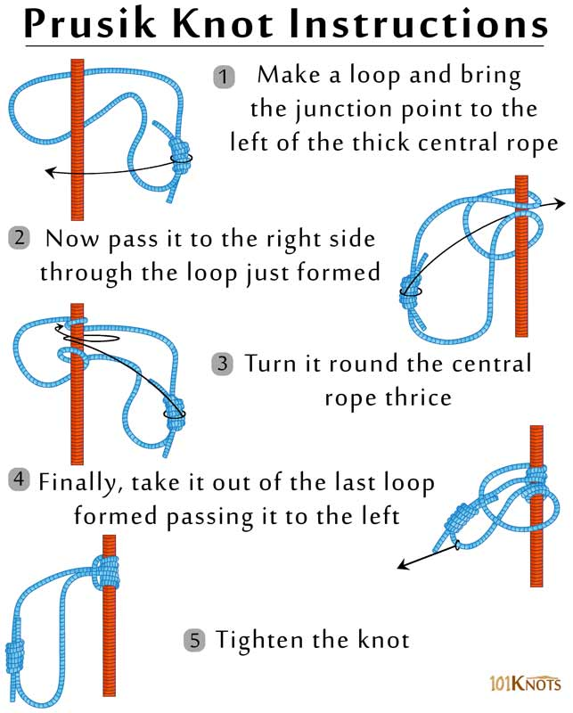

Prusik Knot
The Prusik knot creates a loop that can be used as an ascender or decender. This “slide and grip” knot can also be handy for adding a loop to a rope when neither end of the rope is free.
How to tie a Prusik knot
To tie a Prusik, you’ll need a short rope and a separate long rope. Tie a loop in the short rope that is secured with a solid knot like a square knot. Now, wrap the loop around the long rope three times, making certain that each wrap lies flat against the long rope. Pass the loop of short rope under itself and pull it tight. As long as there is weight on the loop, the Prusik will grip the long rope. You can also slide the Prusik up or down the long rope by taking the weight off the loop and pushing the wraps up or down the long rope.
